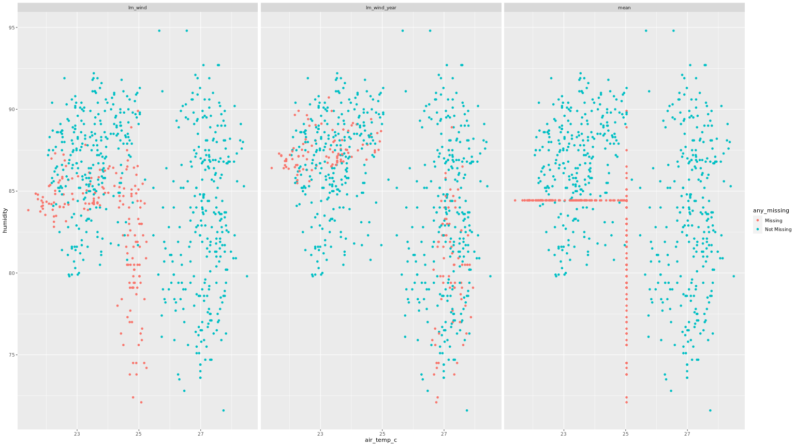

Dealing with missing data in R; Best Practices
Dealing with missing values 🔍
any_na()returns TRUE if any value is missingare_na()returns a logical vector indicating missing valuesn_miss()returns number of missing valuesprop_miss()returns the proportion of the missing valuesprop_complete()returns the proportion of the complete valuespct_miss()returns the percentage of missing valuesn_completereturns the number of complete values
Note: -NULL,NaN and Inf values are not detected by these methods, only NA
- NA | TRUE = TRUE
- NA | FALSE = NA
- NaN + NA = NaN
- NA + NA = NA
- NA + 1 = NA
naniar package holds functions to help us create dataframe summaries of the missing data
miss_case_summary, each case represents a row in a dataframemiss_var_summary, each var represents a column, they work well with dplyrsgroup_by()function if you want to assess different groups in particular.miss_var_tablemiss_case_tablemiss_var_span, helpful to segment the missing data summaries in regular interval spans in time-series data for instance where you might want to compare the data collection effeciency with respect to time span.miss_var_run, returns the “runs”/“streaks” of missingness, particularly useful when trying to find repeated patterns of missing data. also can be paired well with dplyr’sgroup_by()functionmiss_scan_count, used for searching for oddly named missing values e.g. “N/A”, “”, “NOT AVAILABLE”… etc, then accompanied by areplace_with_na(),replace_with_na_at(),replace_with_na_if(),replace_with_na_all()functions to have all NAs ‘uniform’.
Visualization
vis_missfromvisdatpackage for an overviewgg_miss_varcan be faceted by one variablegg_miss_case, order can be turned off byorder_cases = FALSEargument, can be faceted by one variablegg_miss_fct, can’t be faceted, show trend of missing with factorsgg_miss_rungg_miss_upset, vital in showing the number of- combinations of missing values that co-occur
gg_miss_span, supports faceting
How to handle Implicitly missing data
Here we are dealing with missing data that is missing in the data (confusing, right?), in
other words, it turns the implicit missing variables into explicit missing variables. use
tidyrs complete() function, with the columns you want unique combinations of.
data %>%
tidyr::complete(col1,col2)
- another important function is the
fill(), also from thetidyrpackage. last observation carried forward (LOCF).
Missing Dependancies
-
MCAR (Missing Completely at Random) ~the nissing data is ‘randomly consistent’ or ‘consistently random’ and you cant describe its trend or cause -Imputation is advisable -Deleting missing observation may affect the sample size but will not introduce bias, usually only when less than < 5% of data is missing
-
MAR (Missing At Random) ~you can explain trends of the missing data usually explained by a trend of another variable -Imputation needs to be performed carefully -Deleting missing observations not advisable as it will lead or contribute to bias in your data, there’s a insight in the missing variablees hence safer to impute.
-
MNAR (Missing Not At Random) ~you know why your data is missing and usually depends on the the value of the missing variable, which makes this case complicated, a catch 22, if you will -Data will be biased from both deletion and imptutation -Inference can be limited, proceed with caution
Visualization
-
using the function
shadow-bind()we are able to create a nabular(NA + tabular) dataframe that is essential to spot trends associated with missing data, which can be combined withdplyr()functions to create powerful summaries -
another important tool for visualizing the Missing dependancies is the
geom_miss_point()geom fromggplot2, note that this method does an imputation in the background where it imputes the data 10% below minimum value -
these two methods can be combined to bring fourth even more insight!!!
Imputing data workflow
Just as imputing missing values is to our analysis, we need to also keep track of the
values that we have imputed, For this we will make use of the same naniar package that
we have utilized so far, we would also make use of the dplyr package to make statement
like
`bind_shadow(data, only_miss = TRUE) %>%
impute_below_all() %>%
add_label_shadow()`
to create a data frame of imputed values below the variable range and mark each imputed value in a subsequent identifier column
we can also make use of histograms from the ggplot2 package to analyse the distribution
of missingness across each variable.
Things to keep track of
- mean
- median (boxplots)
- spread (scatterplots)
NOTE: when we want to explore the missingness of more than two variables we would first
need to perform some data wrangling and reformat our data table into a longer version with
variables as values(gather/pivot_longer), this can be assisted with naniars function
shadow_long() then combined with a histogram of the variable values grouped by their
missingness with a code similar to
ggplot(data, aes(x = value, fill = value_NA)) +
geom_histogram() +
facet_wrap(~variable)`
Performing imputations
Imputing the mean of the present variable is a common bad practise. As this artificially increases the mean of your dataset and decreases the variance. And more likely than not, the imputed values will not follow the pattern of the underlying data just similarily as using the mean average of your data to predict future values.
We could use the same methods we use in creating models for prediction to fill in our
missing data. for instance the package simputations helps access various models for
imputation like the function impute_lm()would impute the missing values using a linear
model. inside this function we would specify the variable we would like to impute,
(var1) mapped against the variables we would like to inform the imputations (var2),
(var3), (var4) in the following form var(1) ~ var(2) + var(3) + var(4)
-The point outlined above subjects our data with variations of alternatives into building
our imputation model, as one may choose to define their model with 2 variables while on
might decide to use all four,So it would be wise to test the variations out and evaluate
the performance by seeing which model alters mean, median and spread the least and that
would be the model you implement. this can be done using the bind_rows() from dplyr
and comparing them with scatter plots
following is an example of what a plot of imputation comparisons would look like,

Imputation model comparisons
to compare imputation models it is more practical to create the different sets of data derived from different imputation models (including one version of the data with all the missing values removed), creating linear models on the different set of data and evaluating the how those models behave and pick the model you believe best represents your data by exploring the coeffecients.
The process in R would look something like
bound_models <- bind_rows(imp_model1 = imp_model1,
imp_model2 = imp_model2,
imp_model3 = imp_model3,
.id = "imp_model")
model_summary <- bound_models %>%
group_by(imp_model) %>%
nest() %>%
mutate(mod = map(data, ~lm(var(1) ~ var(2) + var(3) + var(4), data = .)),
res = map(mod, residuals),
pred = map(mod, predict),
tidy = map(mod, broom::tidy))
# Explore the coefficients in the model and select best model
model_summary %>%
select(imp_model ,tidy) %>%
unnest() `